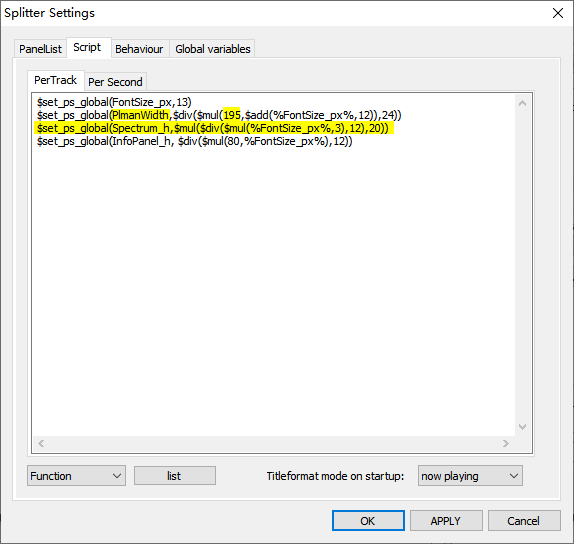

Reszing the panels
Based on CUI+PSS, function for resizing the panels is very limited in foobox. Same with section "Adapt to high resolution screen", we goto CUI Layout dialog, pick the first PSS splitter, press Configure... button.
[Adjust the width of Playlists Manager Panel (left)]
The second variable PlmanWidth is the value to control the width of this panel.
[To delete the Spectrum Panle (right bottom)]
Two steps to delete the spectrum panel if you don't like it:
1. Delete the foo_uie_vis_channel_spectrum.dll component under \Foobar2000\components.
2. Revise the third variable: $set_ps_global(Spectrum_h,$mul($div($mul(%FontSize_px%,3),12),20)) to: $set_ps_global(Spectrum_h,5) Done!
---The End---